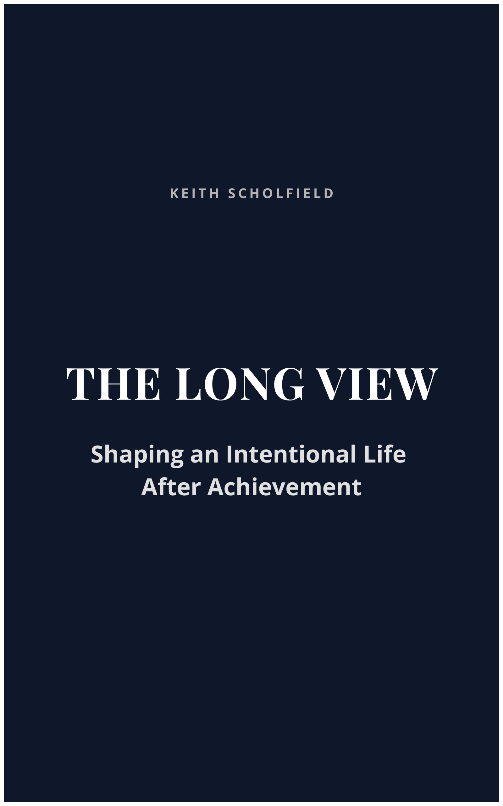

Book
Shaping an Intentional Life After Achievement
Most books about life after work focus on what to do with your time. This one asks what to do with your attention. Written from the road — across cities, ship decks, and upcountry roads — The Long View is a field-tested account of navigating the years after achievement. It explores what freedom actually requires, what genuinely endures beyond the work, and how to shape a life that's deliberately lived rather than simply enjoyed.
Buy on Amazon →